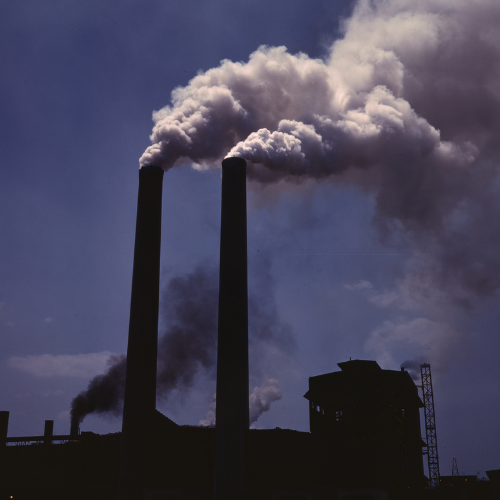
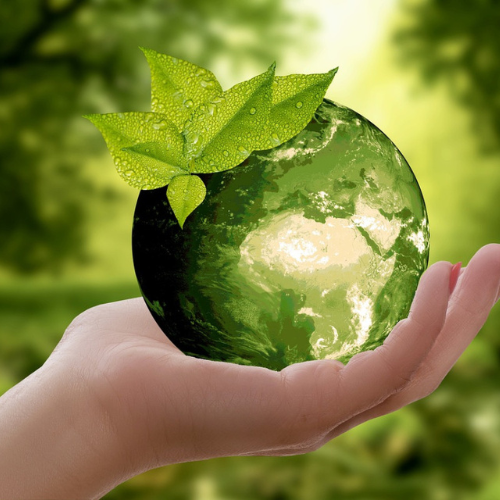

La sostenibilidad se refiere a la capacidad de mantener ciertos procesos o estados a lo largo del tiempo sin agotar los recursos disponibles o causar daños irreparables al medio ambiente. En el contexto ambiental, la sostenibilidad implica el uso responsable de los recursos naturales para satisfacer las necesidades presentes sin comprometer la capacidad de las futuras generaciones para satisfacer sus propias necesidades.
Chile tiene un liderazgo regional en sostenibilidad, destacando en rankings de América Latina y la OCDE, impulsado por su compromiso con energías renovables y acuerdos internacionales. Sin embargo, enfrenta desafíos internos, como un alto consumo que genera un "sobregiro ecológico" y brechas en metas específicas como la protección de ecosistemas terrestres, el consumo y producción responsables y la acción climática.
La sostenibilidad esta casi por los suelos, latinoamerica solo alcanzara el 23% de los avances para el desarrollo sostenible para 2030, tambien podemos observar un avance desigual en las areas de sostenibilidad, "El texto especifica también que el avance es desigual entre subregiones, con México y Centroamérica encaminándose a lograr un 24% de las metas y Sudamérica un 23%, mientras que el Caribe llegaría apenas a un 13%.", dicho por la ONU, aunque se vea mal el panorama, siguen habiendo soluciones
Aunque tengamos desafios con la sostenibilidad, tenemos el potencial de solucionar nuestros problemas, latinoamerica tiene los recursos y la capacidad de resolver casi todos los problemas de sostenibilidad que tiene, porque latinoamerica es una region fuerte, que sabe como solucionar sus problematicas, todas las catastrofes que hemos sufrido las hemos superado, y esta no es diferente, la superaremos como cualquier otra
Perú muestra avances en sostenibilidad, especialmente en energías renovables y reporte empresarial, pero enfrenta grandes desafíos como la deforestación, la minería ilegal y la gestión de residuos. Si bien el país es vulnerable al cambio climático y ha perdido glaciares, también está trabajando en soluciones, como la expansión de energías limpias, y una alta proporción de grandes empresas ya reporta sobre sostenibilidad.
Podemos concluir, que aunque tengamos muchisimos problemas en torno a la sostenibilidad, todavia tenemos el potencial y recursos para solucionarlos, necesitamos un gobierno y un presidente que lleve a cabo lo scambios que se necesitan hacer. Bibliografia